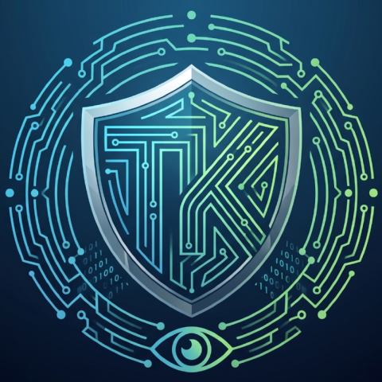

TK Comms SentinelNetwork & comms infrastructure monitoring, live
TK COMMS SENTINEL gives every switch, port, and link on your network a live status — with enough history to know if "slow" is new, and enough precision to name the exact port. Built and proven against a real hospital network — about as unforgiving an environment as it gets.
WINDOWS SERVER · NO IIS REQUIRED · WORKS FULLY OFFLINE
Why this matters
In a network that isn't allowed to go down — a hospital, a financial institution, an industrial site — dozens of switches and hundreds of ports carry equipment that can't drop for a moment. A single failing port doesn't always announce itself clearly: sometimes it just slows down, stutters, or drops one device while the network around it looks perfectly healthy.
General-purpose IT monitoring tools are built for a uniform office network, not for the physical layout of dozens of departments with multi-vendor equipment added over the years. TK COMMS SENTINEL was built and proven against a real hospital network — and now fits any enterprise network with the same reliability bar.
What the system actually does
Visibility, diagnosis, and resilience — each answering a different stage in the life of a network fault.
Multi-vendor SNMP monitoring
Aruba, HPE Comware, Check Point, and other L2/L3 switches — polled in parallel, no agent required on any device.
Real-time dashboard
Bandwidth load, device availability, active faults, and the worst-performing ports over the last 24 hours — at a glance.
Automatic LLDP topology
Uplink connections between switches are detected automatically, so the system — and you — never mistake an end device for infrastructure.
Per-port traffic history
A 48-hour graph for every interface individually — throughput and errors — for investigating a fault after it already happened.
Find by IP or MAC
Enter an address — the system locates which switch and which physical port the device is actually connected to, even when the lookup crosses L3 routing.
Targeted email alerts
A direct link to the specific device and port in the alert — not "something's wrong somewhere on the network," but exactly where.
Enterprise-grade sign-in
Active Directory over LDAPS, mandatory two-factor authentication, and a separate local emergency account for outages.
Runs fully offline
Suited to an air-gapped network. No dependency on any external cloud service for day-to-day operation.
Complete audit log
Every permission change, login, and alert-threshold change is recorded permanently and documented.
How it works
Every device is checked on a set cycle — anywhere from 30 seconds to a few minutes — over SNMP, no local agent needed.
Load, port errors, or disconnects are compared against configured thresholds — per device, per single port, or network-wide.
An email with a direct link to the problem port goes out to the team — before the fault is felt at the clinical workstation.
A view from the system (illustrative)
The example below uses fictional names and figures — not a real network — purely to illustrate the kind of view this is.
Ready for a network that can't depend on anything external
Download & install
A single EXE — Node.js, two Windows services, and a TLS certificate are all created automatically by the setup wizard.